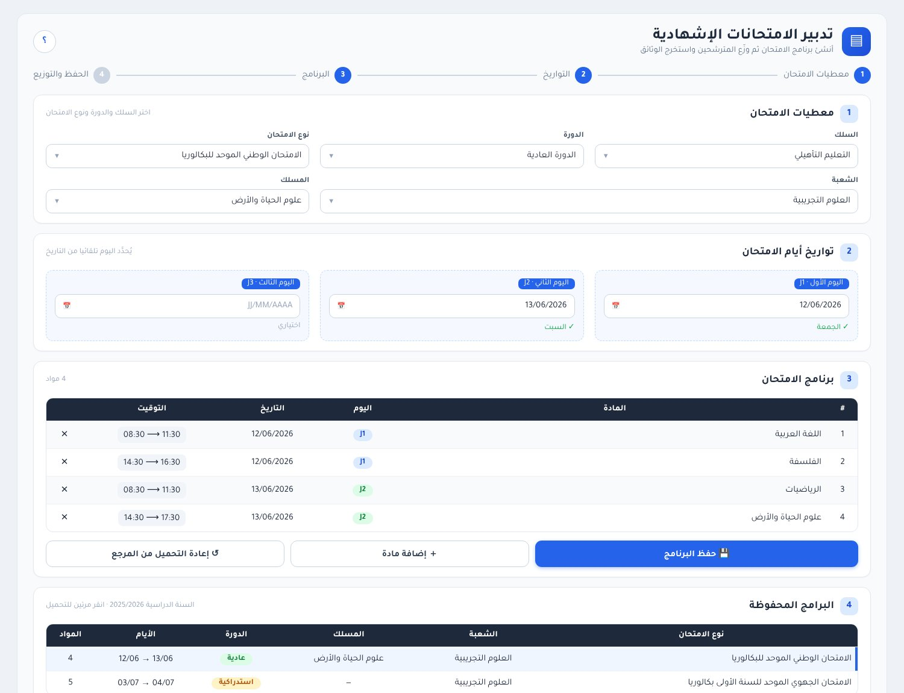

⚡
سرعة في الإنجاز
إشعارات الغياب، أوراق السماح بالدخول، اللوائح والمحاضر تُعدّ بنقرة وتُطبع مباشرة أو بصيغة PDF.
Leadup برنامج حاسوبي متكامل يجمع أعمال الحارس العام ومدير المؤسسة في واجهة عربية واحدة: الغياب والانضباط، الزمن المدرسي، الامتحانات الإشهادية، المجالس، السجلات والوثائق الإدارية الجاهزة للطباعة.
يختصر الأعمال اليومية المتكررة ويُخرج الوثائق الرسمية في دقائق بدل ساعات.
إشعارات الغياب، أوراق السماح بالدخول، اللوائح والمحاضر تُعدّ بنقرة وتُطبع مباشرة أو بصيغة PDF.
يعمل البرنامج دون إنترنت، وتُحفظ قواعد البيانات في حاسوبك، ولا تُمسّ عند تحديث البرنامج.
استيراد لوائح التلاميذ والأقسام وبيانات الأولياء من ملفات منظومة مسار، وجداول الحصص من ملفات FET.
واجهة عربية من اليمين إلى اليسار، مظاهر احترافية، اختصارات لوحة المفاتيح، تنبيهات صوتية ومذكرة يومية.
اختر المهمة لعرض الوظائف المتوفرة في كل نسخة.
مثال: تهيئة وثائق الامتحانات الإشهادية في أربع مراحل مرقمة.

اختر 64 بت للحواسيب الحديثة (Windows 10 و 11)، و32 بت للحواسيب القديمة أو Windows 8.1.
المواظبة والانضباط، بيانات التلاميذ، التقويم، الزمن المدرسي، المجالس والتقارير.
الواردات والصادرات، التدبير الإداري والتربوي، الامتحانات الإشهادية، تدبير المخاطر والجمعية.
إذا ظهرت رسالة Google Drive «تعذّر فحص الملف بحثا عن الفيروسات» اضغط «تنزيل على أي حال».
إذا ظهرت نافذة Windows الزرقاء «حماية الكمبيوتر»، اضغط «مزيد من المعلومات» ثم «تشغيل على أي حال».
التثبيت لا يحتاج صلاحيات المسؤول، ويُنشئ اختصارا على سطح المكتب.
استورد لوائح التلاميذ من مسار، ثم املأ البطاقة التقنية للمؤسسة. عند التحديث تبقى بياناتك كما هي.
لا. يعمل البرنامج بالكامل دون اتصال، وتُحفظ البيانات في حاسوبك.
لا. قواعد البيانات محفوظة في مجلد مستقل عن مجلد البرنامج، ولا يمسّها التحديث ولا إلغاء التثبيت.
نعم للطباعة وإخراج الوثائق بصيغة PDF، لأن النماذج الرسمية مُعدّة على Excel.
افتح «الإعدادات» ← «النظام» ← «حول» وانظر إلى «نوع النظام». إذا كان 64 بت فاختر نسخة 64 بت، وإلا فاختر 32 بت. نسخة 32 بت تعمل أيضا على الأنظمة 64 بت.
لا حاليا. البرنامج يعمل على Windows 8.1 و 10 و 11.
لأن البرنامج غير موقّع بشهادة تجارية مدفوعة. التحذير عادي ولا يعني وجود خطر: اضغط «مزيد من المعلومات» ثم «تشغيل على أي حال».
نرحب بملاحظاتكم لتطوير البرنامج وإضافة الوظائف التي تحتاجها مؤسستكم.